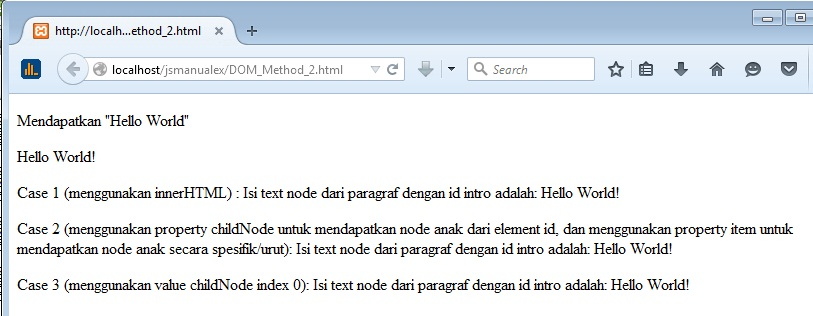

Javascript DOM¶
Introduction¶
DOM = Document Object Model
DOM merupakan standar yang dibuat oleh W3C(World Wide Web Consortium) untuk mengakses HTML dan XML.
W3C DOM adalah suatu platform dan interface bahasa netral yang memperbolehkan program dan scripts untuk mengakses secara dinamis dan meng-update isi(content), struktur dan style dari document.
Note
Dengan adanya DOM, maka kemudian muncullah bahasa baru dalam mengaksesnya seperti Javascript, CSS, dll yang dapat memanipulasi elemen daripada Document Object Model seperti HTML dan XML.
DOM dibagi menjadi 3 bagian berbeda/level berbeda :
- Core DOM, model standar untuk setiap struktur document.
- XML DOM, model standar untuk document XML.
- HTML DOM, model standar untuk document HTML.
DOM mendefinisikan object dan property dari semua document element dan method(interface) untuk mengaksesnya.
XML DOM mendefinisikan object dan property semua XML element dan method(interface) untuk mengaksesnya
HTML DOM mendefinisikan object dan property dari semua HTML element dan method(interface) untuk mengaksesnya.
Dalam kata lain, HTML DOM adalah standar untuk dapat mendapatkan(get), mengganti, menambah atau menghapus elemen HTML
HTML DOM dapat disimpulkan sebagai :
- Standar object model untuk HTML
- Standar pemrograman interface untuk HTML
- platform independent dan bahasa independent
- standar oleh W3C
Note
Interface merupakan suatu bentuk kumpulan kode yang dapat digunakan dengan konsep seperti pemanggilan function ataupun object hanya saja di dalamnya tidak terdapat adanya pendefinisian/pendeklarasian syntax yang berarti (variabel, function, class, value, dll).
Nodes¶
Dalam DOM, maka semua yang ada pada HTML document adalah node.
Dalam HTML, maka DOM daripadanya dapat ditelaah seperti:
- keseluruhan document adalah node document
- Setiap element HTML adalah node element
- Text dalam HTML element adalah node text
- comments adalah node comment
<html>
<head>
<title>DOM Tutorial</title>
</head>
<body>
<h1>DOM Lesson one</h1>
<p>Hello world!</p>
</body>
</html>
Penjelasan
Dalam Contoh diatas maka node daripada DOM dapat dijelaskaan seperti
Root node dari document diatas adalah <html>, dan semua node-node yang ada di dalam document berisikan di dalam node <html>
node <html> memiliki 2 “child node” yaitu : <head> dan <body>
node <head> “hold” (menahan/berisikan) node <title>.
node <body> “hold” node <h1> dan node <p>.
Node text
Text di suatu element akan disimpan ke dalam node text.
misal :
<title>DOM tutorial</title>
maka node <title> “hold” sebuah node text dengan value “DOM tutorial”.
value daripada node text dapat diakses dengan property “innerHTML”(dapat dilakukan dengan bantuan bahasa javascript).
Error yang biasa terjadi dalam proses DOM adalah karena diharapkan adanya element node yang berisi text.
Node Tree¶
Dalam HTML DOM, sebuah document HTML disusun dengan node tree (struktur pohon node).
Semua node dalam node tree memiliki hubungan satu sama lain.
Semua node dapat diakses melalui pohonnya(root/sumber node).
isi(content) di dalamnya dapat diubah atau dihapus dan element baru dapat ditambahkan.
node tree dibawah memperlihatkan aturan daripada node, dan koneksi diantaranya.
tree (pohon) dimulai dari root node dan bercabang sampai pada node text(level node paling rendah).

Node Parent, Child, dan Siblings (node orang Tua, anak, saudara).
Node dalam node tree memiliki hubungan kirarki satu sama lain.
Pendefinisian parent, child, dan sibling adalah untuk mendeskripsikan hubungannya.
Node Parent memiliki node child, sedangkan node child yang setara(sama levelnya) disebut node sibling.
Dalam node tree, node paling atas disebut node root.
Setiap node pasti memiliki satu node parent, kecuali node root(tidak memiliki node parent).
Suatu node dapat memiliki satu atau lebih node child.
node leaf adalah node yang tidak memiliki node child.
node sibling adalah node yang memiliki node parent yang sama.
Node Method¶
Dalam DOM, HTML document berisi daripada satu set object node.
Node dapat diakses dengan bahasa JavaScript atau bahasa program lainnya.
Namun dalam tutorial ini, penulis akan menggunakan javascript.
Pemrograman interface dari DOM didefinisikan dari standar property dan method.
HTML DOM Property¶
Property adalah sesuatu yang dapat menge-get atau menge-set value(seperti nama atau value suatu node).
HTML DOM Properties
x.innerHTML - value text(text node) dari “x”.
x.nodeName - nama dari node “x”.
x.nodeValue - value dari node “x”.
x.parentNode - node parent dari node “x”.
x.childNodes - node child dari node “x”.
x.attributes - atribut dari node “x”
keterangan :
x => node object(element HTML)
misal : document.getElementById("nama_id")
HTML DOM Method¶
Method biasa untuk melakukan sesuatu (seperti menghapus atau memasukkan node).
Contoh Method DOM :
x.getElementById(id) - get (mendapatkan) element dengan id tertentu.
x.getElementsByTagName(name) - get semua element dengan nama tertentu.
x.appendChild(node) - memasukkan sebuah node child ke dalam “x”.
x.removeChild(node) - menghapus child node dari “x”
keterangan :
dalam contoh 1 dan 2,x adalah object node daripada window, yaitu document
dalam contoh 3 dan 4,x adalah node object dsripada element HTML
Property innerHTML¶
Cara termudah dalam mengubah isi(content) dari suatu element adalah dengan menggunakan property innerHTML.
innerHTML bukanlah bagian dari spesifikasi W3C DOM, namun ini didukung oleh semua mayoritas browser.
Property innerHTML dapat me-return atau mengubah isi(content) dari element HTML, bahkan tag <html> dan <body>.
<!DOCTYPE html>
<html>
<body>
<p id="intro">Hello World!</p>
<script type="text/javascript">
//mendapatkan element dari id "intro" => document.getElementById("intro")
//mendapatkan value daripada element tersebut => innerHTML
//menyimpan ke dalam variabel "txt"
txt=document.getElementById("intro").innerHTML;
//memanipulasi document => document
//yaitu dengan method "write" atau menulis
//dengan isi(content) paragraf baru yang ditambahkan dengan value daripada variabel "txt"
document.write("<p>The text from the intro paragraph: " + txt + "</p>");
</script>
</body>
</html>
Note
Sebagai catatan bahwa hampir semua element dalam HTML memiliki text node(value node berupa text)
ChildNode, NodeList, NodeName, NodeValue dan NodeType¶
Property ChildNode berfungsi dalam mereturn kumpulan node child pada suatu node.
NodeList merupakan suatu daftar Node (urutan Node).
Setiap item NodeList dapat diakses melalui index (array) yang dimulai dari 0.
NodeList dapat dibentuk dari adanya ChildNode.
Dalam NodeList memiliki property length unruk mengetahui berapa banyak jumlah daripada daftar Node dan method “item()” dalam mengakses suatu daftar Node.
NodeName me-return nama daripada suatu node.
Nama dari node tergantung daripada node tersebut, apabila berasal dari element, maka nama node adalah element nya (misal : element <p></p> akan mereturn “P”) jika berasal dari atribut maka akan me-return atribut nya, dan jika berasal dari text(node text) maka akan me-return text.
Setiap syntax markup, meski tidak memiliki value text node, akan tetap dianggap memiliki node text.
NodeValue adalah syntax untuk me-return atau mengeset suatu value dari suatu node.
NodeType mereturn tipe suatu node sebagai number.
Jika 1 maka tipe node adalah element, jika 2 maka tipe node adalah atribut dan jika tipe 3 maka tipe node adalah text node.
Contoh
<!DOCTYPE html>
<html>
<body>
<p id="demo">Klik button untuk mengetahui node child daripada body</p>
<button onclick="myFunction()">Klik</button>
<script>
function myFunction()
{
var nama_tipe_node="";
var c=document.body.childNodes;
for (i=0; i<c.length; i++)
{
nama_tipe_node=nama_tipe_node + "node bertipe => " + c[i].nodeType + ", node bernama => " + c[i].nodeName + "<br>";
};
var x=document.getElementById("demo");
x.innerHTML=nama_tipe_node;
}
</script>
<p>
<strong>Catatan:</strong> Element yang tidak memiliki value node text akan dianggap memiliki node text
</p>
<!-- element dengan node text yang kosong -->
<b></b>
<form name="form_1" method="POST" action="">
<input type="text" name="te">
<select name="sel">
<option value="2">2</option>
</select>
<br>
<input type="button" value="button" name="button">
</form>
</body>
</html>
<!-- childNodes hanya berisikan anaknya saja (artinya sesama sibling anak ditampilkan, namun tidak sampai ke struktur terendah atau anak dari anak) -->
<!DOCTYPE html>
<html>
<body>
<p>Mendapatkan "Hello World"</p>
<p id="intro">Hello World!</p>
<script type="text/javascript">
txt_1=document.getElementById("intro").innerHTML;
document.write("<p>Case 1 (menggunakan innerHTML) : Isi text node dari paragraf dengan id intro adalah: " + txt_1 + "</p>");
txt_2=document.getElementById("intro").childNodes.item(0).nodeValue;
document.write("<p>Case 2 (menggunakan property childNode untuk mendapatkan node anak dari element id, dan menggunakan property item untuk mendapatkan node anak secara spesifik/urut): Isi text node dari paragraf dengan id intro adalah: " + txt_2 + "</p>");
txt_3=document.getElementById("intro").childNodes[0].nodeValue;
document.write("<p>Case 3 (menggunakan value childNode index 0): Isi text node dari paragraf dengan id intro adalah: " + txt_3 + "</p>");
</script>
</body>
</html>
<!– case 2 dan case 3 merupakan cara yang identik, yaitu sama-sama me-return daripada text node –>
Node Access¶
Dengan adanya Document Object Model(DOM) maka setiap node dalam document HTML dapat diakses(dimanipulasi).
Suatu object element document dimanipulasi dengan memberikan suatu action(property atau method), dan sebelum melakukan action maka yang perlu dilakukan sebelumnya adalah dengan mendapatkan(get/return) node daripada object document,
Terdapat 3 cara dalam mengakses(mendapatkan) node, yaitu :
- Method “getElementById()”
- Method “getElementsByTagName()”
- Menggunakan hubungan pohon node
method getElementById()¶
method “getElementById()” mereturn element yang memiliki spesifikasi dari ID.
<!DOCTYPE html>
<html>
<head>
<title></title>
</head>
<body>
<p id="intro">Hai Kawan</p>
<p>mengakses element yang didapatkan(return/get) dengan method <b>getElementById()</b></p>
<script type="text/javascript">
//mereturn(get) element yang ber-id "intro"
//di-assign ke dalam variabel "x"
x=document.getElementById("intro");
//menuliskan ke dalam document(element "<p></p>" baru)
//di dlaamnya terdapat me-return value node text daripada variabel "x"
document.write("<p>Value Text Node daripada element dengan id \"intro\" yaitu : " + x.innerHTML + "</p>");
</script>
</body>
</html>
<!-- COMMENT -->
Method getElementsByTagsName()¶
Method “getElementsByTagName()” me-return element yang di-spesifikasikan dari name.
<!DOCTYPE html>
<html>
<head>
<title></title>
</head>
<body>
<p>Hai Kawan</p>
<p>DOM itu menakjubkan</p>
<p>mengakses element yang didapatkan(return/get) dengan method <b>getElementsByTagName()</b></p>
<script type="text/javascript">
x=document.getElementsByTagName("p");
document.write("Value node text dari paragraf paling awal: " + x[0].innerHTML);
</script>
</body>
</html>
<!-- Ingat memakai akhiran "s" pada "Element" yaitu : "getELementsByTagName" -->
Note
Satu satunya hal yang harus diperhatikan dalam setiap pengaksesan element HTML, baik dari node atau dari lainnya adalah dari index number node itu sendiri.
Karena setiap element document memiliki index number yang selalu urut.
Melalui hubungan pohon node¶
Penggunaan method getElementById() tentu jauh lebih baik dari method getElementsByTagName() karena method getElementById() jauh lebih spesifik dalam mencari suatu element, sehingga hasil pencarian element dipastikan adalah satu element tersebut.
Berbeda dengan method getElementsByTagName() yang masih membutuhkan adanya index number untuk mendapatkan(get/return) suatu element.
Namun bukan berarti penggunaan method getElementsByTagName() menjadi sama sekali tidak dipakai nantinya dalam pemrograman, karena pengaksesan suatu element tentu tidak selalu hanya satu element saja, semuanya tergantung bagaimana kebutuhan program yang akan dipakai.
Di sisi lain, tidak pula semua element selalu dalam satu baris yang sama, atau memiliki posisi yang sama (sebagai node child, atau dengan element yang lain semuanya adalah sibling).
Karena semua juga tergantung pada kebutuhan program yang akan dipakai, sehingga sangat memungkinkan terdapat adanya node parent dan node child.
Kemudian bagaimana jika element tersebut tidak memiliki adanya atribut id???
Jawabnya adalah bisa, dengan menggunakan navigasi hubungan node.
Yaitu mendapatkan node(return/get node) dengan cara menuliskan bagian per bagian, menurut urutan level node, atau parent dan child nya.
misal : document.<elementParent>.<elementChild>.action
Penggunaan atribut id tentu akan membutuhkan banyak sekali identifier pada setiap element, hal ini sebenarnya cukup merepotkan juga dalam pemrograman.
<!DOCTYPE html>
<html>
<head>
<title></title>
</head>
<body>
<p>Hai Kawan</p>
<br><hr>
<div id="main">
<p>DOM itu menakjubkan</p>
<p>DOM itu Hebat</p>
<p>mengakses element yang didapatkan(return/get) dengan method <b>getElementsByTagName()</b> yang mana menggunakan </p>
</div>
<br><hr>
<form id="fo">
<input type="text" name="fo" value="">
</form>
<br><hr>
<script type="text/javascript">
//all element <p></p>
a = document.getElementsByTagName("p");
document.write("jumlah node dengan element 'p' = >"+a.length);
document.write("<br>");
for(i = 0; i < a.length; i++)
{
document.write(a[i].innerHTML);
document.write("<br>");
};
document.write("<br><hr>");
//element <p></p> di dalam element <div></div>
//element <p></p> pertama
x=document.getElementById("main").getElementsByTagName("p");
//element <p></p> kedua
y=document.getElementById("main");
z=y.getElementsByTagName("p");
document.write("Value node text dari paragraf pertama: " + x[0].innerHTML);
document.write("<br>");
document.write("Value node text dari paragraf kedua: " + z[1].innerHTML);
//mengakses element input dari element form
document.getElementById("fo").getElementsByTagName("input")[0].value="hai";
</script>
</body>
</html>
<!--
dalam contoh ini maka cara dalam mendapatkan suatu element dengan cara method "getElementsByTagName()" di dalam suatu element adalah dengan cara menuliskan bagian element sebelumnya, atau mudahnya node element parent
misal :
document.<elementParent>.<elementUtama>.action
-->
Memasukkan element dengan Javascript¶
Untuk dapat memasukkan element dengan javascript maka ini tidak bisa dengan menggunakan syntax append, seperti misal $(obj).append("<element></element>");.
Karena fungsi tersebut hanya akan menghasilkan string dan bukan element, kalaupun bisa menjadi suatu element, maka meski terdapat adanya id atau class, element tersebut tidak akan dapat di select/pilih dengan id atau class yang disertakan.
Untuk dapat memasukkan element, maka yang diperlukan adalah membuat element dengan syntax createElement kemudian memberikan attribute seperti id, class, atau attribute lain yang biasa ada di element tersebut, seperti value, input, dll.
misalkan adalah pembuatan element seperti berikut
var obj = this;
var inputAddress = document.createElement('input');
inputAddress.class = 'input-text';
inputAddress.type = 'text';
inputAddress.name = 'address';
inputAddress.value = 'st. pittsburgh';
(obj).append(inputAddress);
Dengan menggunakan syntax tersebut maka element baru akan tercipta dan dapat menggunakan class ataupun idnya.